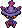

叫聲Growl
- 屬性
- 一般
- 分類
- 變化
- 威力
- -
- 命中
- 100%
- SP
- 10
- 冷卻
- 1 秒（變化組）
- 範圍
- 自身周圍
- 距離
- 0 格・半徑 2
- 段數
- 1
- 前搖
- 0.35 秒
- 接觸
- 否
即時戰鬥效果
降低對手的攻擊（-1）。
命中使用者周圍的所有敵人。
升級時學會
 妙蛙種子 Lv 4
妙蛙種子 Lv 4 妙蛙草 Lv 1妙蛙草 Lv 4
妙蛙草 Lv 1妙蛙草 Lv 4 妙蛙花 Lv 1妙蛙花 Lv 4
妙蛙花 Lv 1妙蛙花 Lv 4 小火龍 Lv 1
小火龍 Lv 1 火恐龍 Lv 1
火恐龍 Lv 1 噴火龍 Lv 1
噴火龍 Lv 1 烈雀 Lv 1
烈雀 Lv 1 大嘴雀 Lv 1
大嘴雀 Lv 1 皮卡丘 Lv 1
皮卡丘 Lv 1 尼多蘭 Lv 1
尼多蘭 Lv 1 尼多娜 Lv 1
尼多娜 Lv 1 皮皮 Lv 1
皮皮 Lv 1 地鼠 Lv 5
地鼠 Lv 5 三地鼠 Lv 1三地鼠 Lv 5
三地鼠 Lv 1三地鼠 Lv 5 喵喵 Lv 1
喵喵 Lv 1 貓老大 Lv 1
貓老大 Lv 1 小火馬 Lv 5
小火馬 Lv 5 烈焰馬 Lv 1烈焰馬 Lv 5
烈焰馬 Lv 1烈焰馬 Lv 5 呆呆獸 Lv 6
呆呆獸 Lv 6 呆殼獸 Lv 1呆殼獸 Lv 6
呆殼獸 Lv 1呆殼獸 Lv 6 嘟嘟 Lv 1
嘟嘟 Lv 1 嘟嘟利 Lv 1
嘟嘟利 Lv 1 小海獅 Lv 9
小海獅 Lv 9 白海獅 Lv 1白海獅 Lv 9
白海獅 Lv 1白海獅 Lv 9 卡拉卡拉 Lv 1
卡拉卡拉 Lv 1 嘎啦嘎啦 Lv 1
嘎啦嘎啦 Lv 1 吉利蛋 Lv 1
吉利蛋 Lv 1 拉普拉斯 Lv 1
拉普拉斯 Lv 1 伊布 Lv 16
伊布 Lv 16 菊草葉 Lv 1
菊草葉 Lv 1 月桂葉 Lv 1
月桂葉 Lv 1 大竺葵 Lv 1
大竺葵 Lv 1 咕咕 Lv 1
咕咕 Lv 1 貓頭夜鷹 Lv 1
貓頭夜鷹 Lv 1 波克比 Lv 1
波克比 Lv 1 波克基古 Lv 1
波克基古 Lv 1 咩利羊 Lv 1
咩利羊 Lv 1 茸茸羊 Lv 1
茸茸羊 Lv 1 電龍 Lv 1
電龍 Lv 1 呆呆王 Lv 6
呆呆王 Lv 6 夢妖 Lv 1
夢妖 Lv 1 麒麟奇 Lv 1
麒麟奇 Lv 1 小小象 Lv 1
小小象 Lv 1 頓甲 Lv 1
頓甲 Lv 1 大奶罐 Lv 4
大奶罐 Lv 4 幸福蛋 Lv 1
幸福蛋 Lv 1 火稚雞 Lv 1
火稚雞 Lv 1 力壯雞 Lv 1
力壯雞 Lv 1 火焰雞 Lv 1
火焰雞 Lv 1 水躍魚 Lv 1
水躍魚 Lv 1 沼躍魚 Lv 1
沼躍魚 Lv 1 巨沼怪 Lv 1
巨沼怪 Lv 1 蛇紋熊 Lv 1
蛇紋熊 Lv 1 直衝熊 Lv 1
直衝熊 Lv 1 蓮葉童子 Lv 3
蓮葉童子 Lv 3 蓮帽小童 Lv 3
蓮帽小童 Lv 3 樂天河童 Lv 1
樂天河童 Lv 1 傲骨燕 Lv 1大王燕 Lv 1
傲骨燕 Lv 1大王燕 Lv 1 長翅鷗 Lv 1
長翅鷗 Lv 1 大嘴鷗 Lv 1
大嘴鷗 Lv 1 拉魯拉絲 Lv 1
拉魯拉絲 Lv 1 奇魯莉安 Lv 1
奇魯莉安 Lv 1 沙奈朵 Lv 1
沙奈朵 Lv 1 向尾喵 Lv 1
向尾喵 Lv 1 優雅貓 Lv 1
優雅貓 Lv 1 正電拍拍 Lv 1
正電拍拍 Lv 1 負電拍拍 Lv 1
負電拍拍 Lv 1 吼吼鯨 Lv 5
吼吼鯨 Lv 5 吼鯨王 Lv 1吼鯨王 Lv 5
吼鯨王 Lv 1吼鯨王 Lv 5 呆火駝 Lv 1
呆火駝 Lv 1 噴火駝 Lv 1
噴火駝 Lv 1 青綿鳥 Lv 1
青綿鳥 Lv 1 七夕青鳥 Lv 1
七夕青鳥 Lv 1 風鈴鈴 Lv 6
風鈴鈴 Lv 6 海豹球 Lv 1
海豹球 Lv 1 海魔獅 Lv 1
海魔獅 Lv 1 帝牙海獅 Lv 1
帝牙海獅 Lv 1 波加曼 Lv 4波皇子 Lv 1波皇子 Lv 4
波加曼 Lv 4波皇子 Lv 1波皇子 Lv 4 帝王拿波 Lv 1帝王拿波 Lv 4
帝王拿波 Lv 1帝王拿波 Lv 4 姆克兒 Lv 1
姆克兒 Lv 1 姆克鳥 Lv 1
姆克鳥 Lv 1 姆克鷹 Lv 1大牙狸 Lv 5
姆克鷹 Lv 1大牙狸 Lv 5 大尾狸 Lv 1大尾狸 Lv 5
大尾狸 Lv 1大尾狸 Lv 5 圓法師 Lv 1
圓法師 Lv 1 音箱蟀 Lv 1
音箱蟀 Lv 1 帕奇利茲 Lv 1
帕奇利茲 Lv 1 泳圈鼬 Lv 1
泳圈鼬 Lv 1 浮潛鼬 Lv 1
浮潛鼬 Lv 1
夢妖魔 Lv 1 魅力喵 Lv 8
魅力喵 Lv 8 東施喵 Lv 1東施喵 Lv 8
東施喵 Lv 1東施喵 Lv 8 鈴鐺響 Lv 6
鈴鐺響 Lv 6 聒噪鳥 Lv 5
聒噪鳥 Lv 5招式光碟
 一般屬性招式光碟 ・少見（每打倒一隻該屬性寶可夢 1%，由 119 個招式分配）
一般屬性招式光碟 ・少見（每打倒一隻該屬性寶可夢 1%，由 119 個招式分配）
可以教會 469 隻寶可夢：遊戲中的每一隻都能學（一般屬性招式不限屬性）。